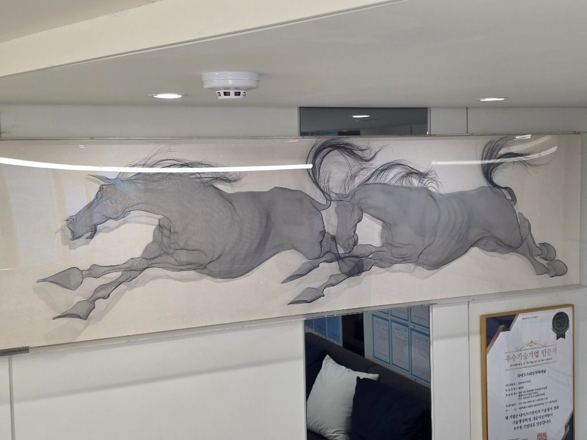
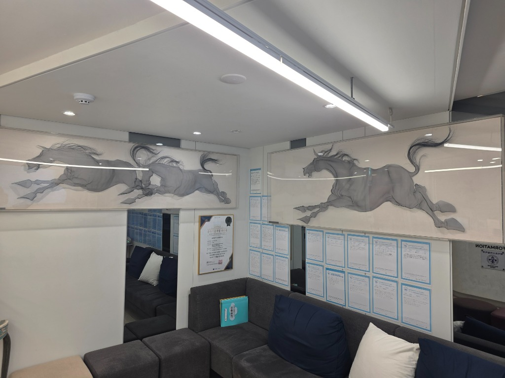
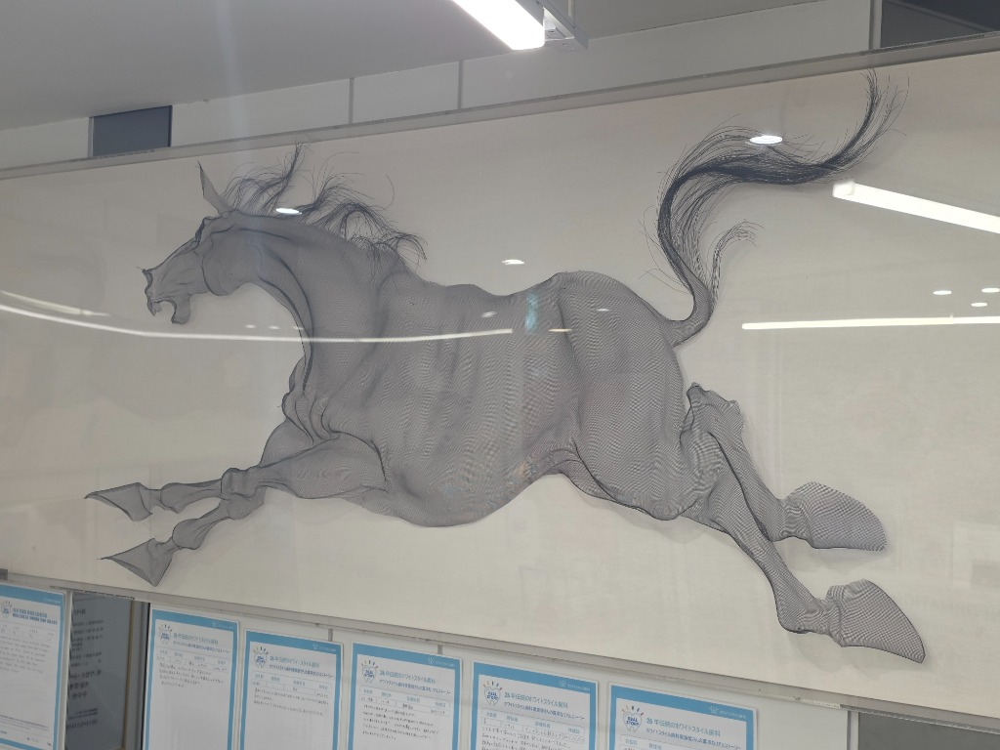
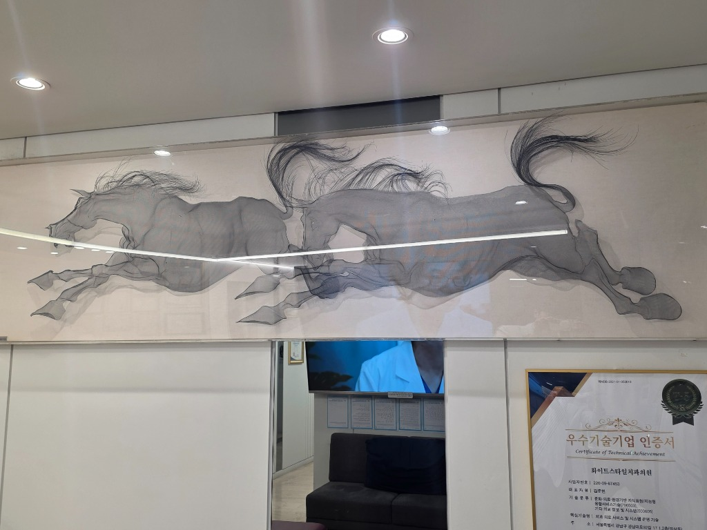
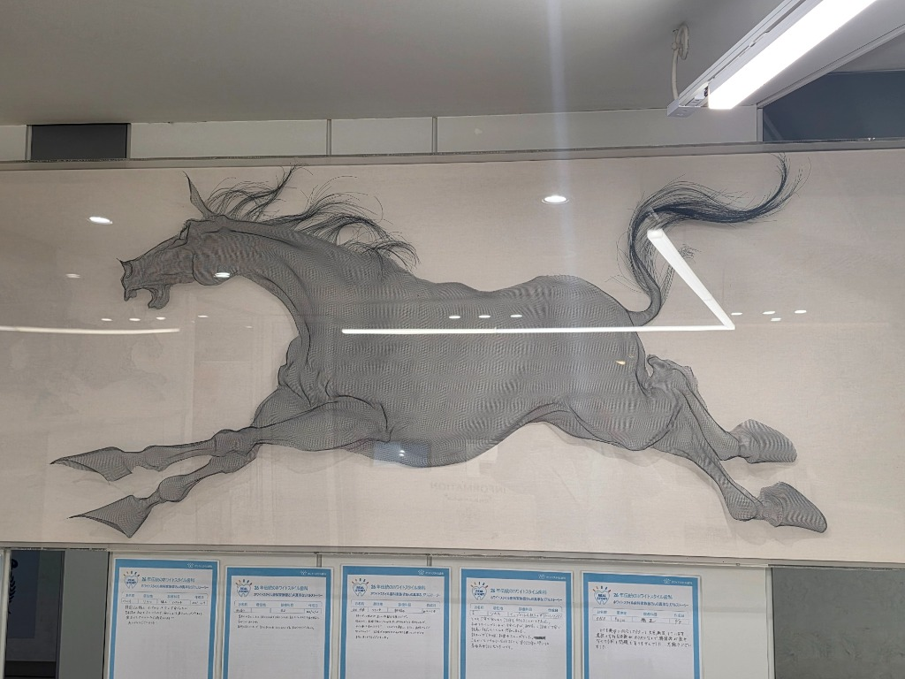

Special Interior Concept
Artistic Space
예술과 의술이 만나는 곳, 화이트스타일의 특별한 인테리어 컨셉입니다.
Artist Park Sung-Tae
"특별한 만남을 위한 특별한 공간"
"특별한 만남을 위한 특별한 공간"
박성태 작가의 철망 회화
화이트스타일치과 대기실에는 대한민국 설치미술의 거장, 박성태 작가님의 귀한 작품이 전시되어 있습니다. 알루미늄 망사(Mesh)를 활용하여 입체적인 형상을 빚어내는 박성태 작가 특유의 기법은 빛과 그림자가 만들어내는 수묵화와 같은 깊이를 선사합니다.
특히 본원에 전시된 두 마리의 말(馬) 작품은 작가의 대표작인 '천마도'와 '행차도'의 초기 원형이 되었던 매우 의미 있는 작품으로, 작가님께서 본원의 진료 철학에 공감하여 직접 기증해 주신 특별한 인연이 담겨 있습니다.





설치미술가 박성태 (Park Sung-Tae)
서울대학교 미술대학 및 동 대학원 졸업. 철망이라는 차가운 소재를 통해 실재와 부재, 빛과 그림자의 조화를 탐구하는 작가입니다.
- • 국립현대미술관, 서울시립미술관 등 주요 기관 작품 소장
- • '천마도', '행차도' 등 대형 공공 미술 프로젝트 수행
- • 알루미늄 방충망을 활용한 독창적인 부조 기법의 창시자
"역동적인 말의 근육과 움직임이 투명한 철망 사이로 투영되는 순간,
병원은 단순한 치료의 공간을 넘어 치유의 갤러리가 됩니다."